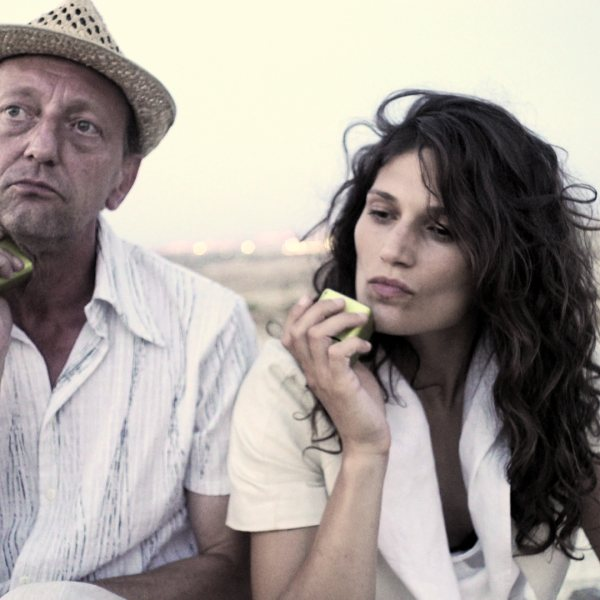
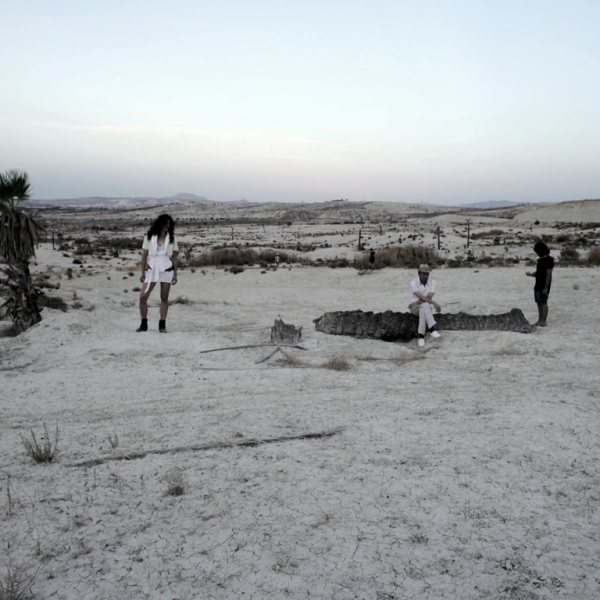
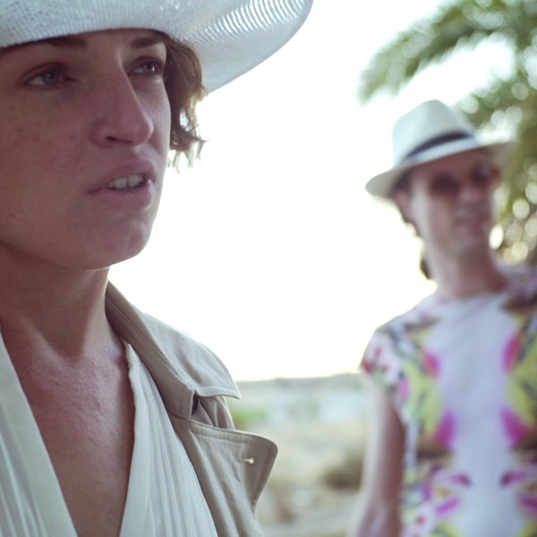
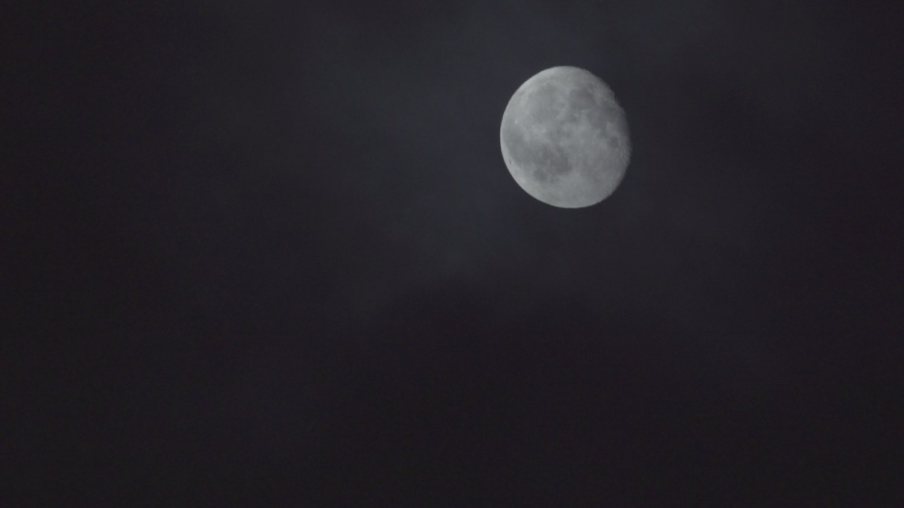
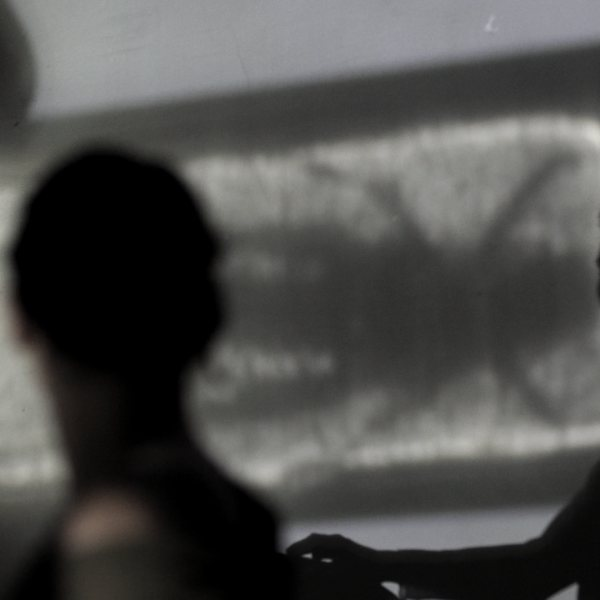
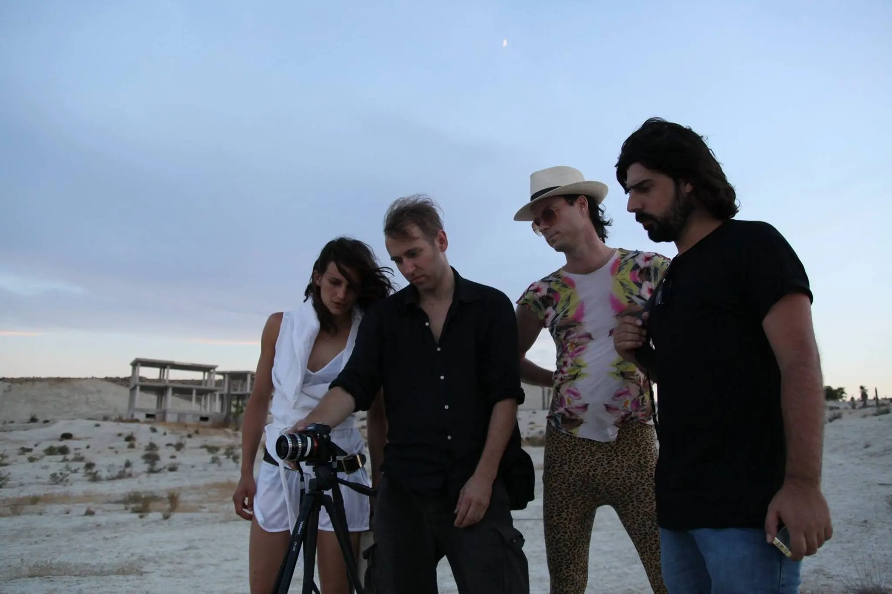
The Lost Color
A dysfunctional tourist couple tries to buy a huge property in the Spanish countryside and becomes a driving force toward a dystopian world. Other obscure figures distract them from their enterprise: distrust, misunderstanding, hidden forces behind people’s behavior, and a primitive, pre-civilizational state of life glimpsed through the dark night.
The film starts as a narrative and repeatedly abandons the story for pure association of images. Shot mostly by available moonlight in the desert wilderness near Blanca (Murcia), partly improvised and partly scripted. After Music for Dysfunctional Airports, it is Kris Limbach’s second film shot in Spain about the economic and spiritual European crisis. It is often screened with live sound, with Jochen Arbeit and Pierce Warnecke.
Kris created a world of his own, which makes the real world feel unreal.Cipriano Torres, Faro de Vigo
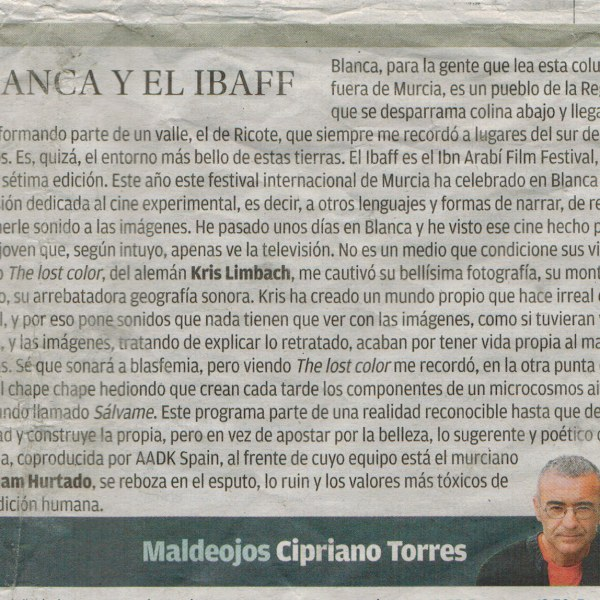
Review, Faro de Vigo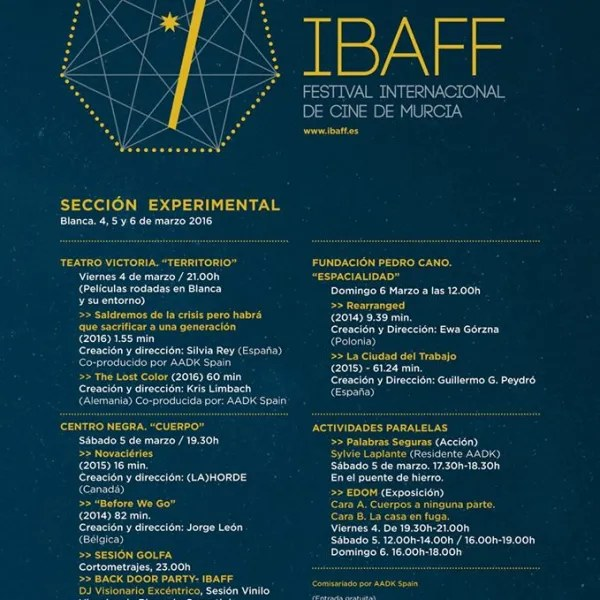
IBAFF 2016 programme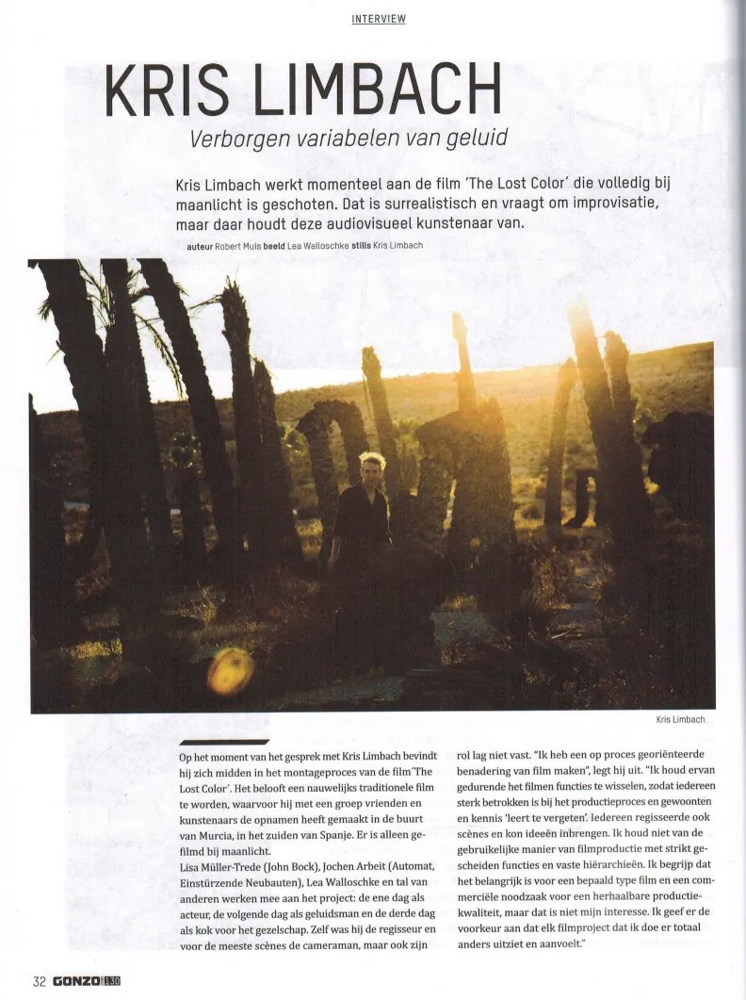
Interview, Gonzo Circus #130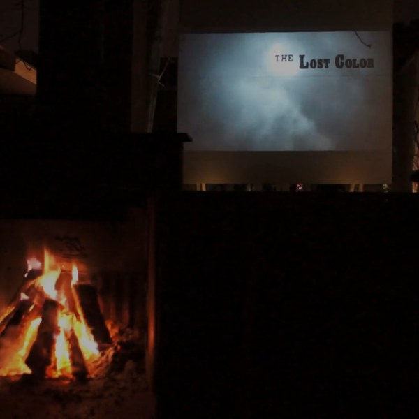
Installation, LUNA Leeuwarden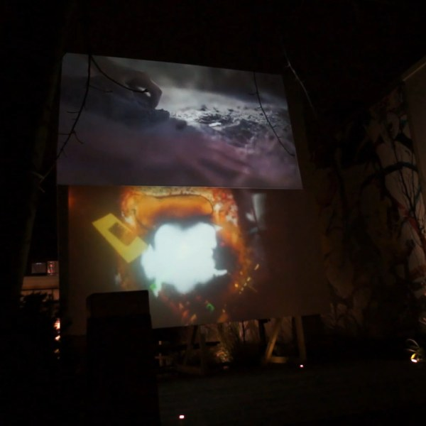
LUNA, double projection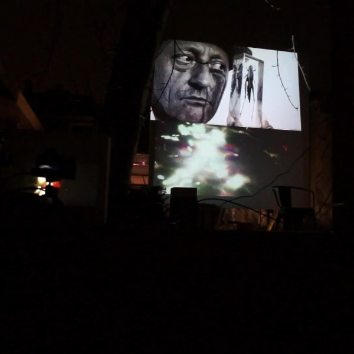
LUNA, double projectionCast Lisa Müller-Trede, Jochen Arbeit, Lea Walloschke, James Farrell, Selu Herraiz, José Hortelano Villegas
Music Jochen Arbeit, Miguel A. Garcia, Hopek Quirin, Pierce Warnecke, Rieko Okuda, Juan Antonio Nieto (Pangea), Ketev
Shown at IBAFF Murcia (premiere), INTERFERENCE Tunis, MEM Bilbao, LUNA / Media Art Festival Leeuwarden (installation), ¡ESCUCHA! Madrid, Z-inema Berlin, Espacio B Madrid